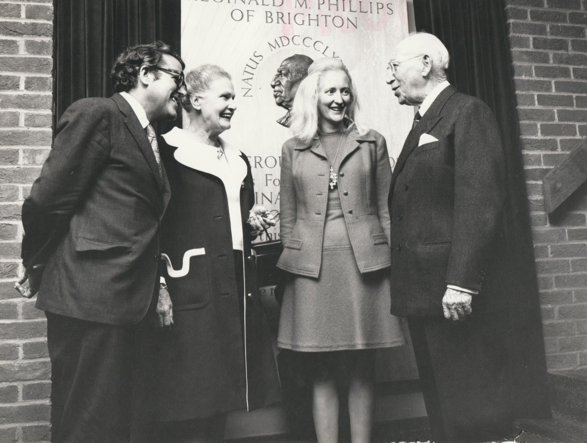
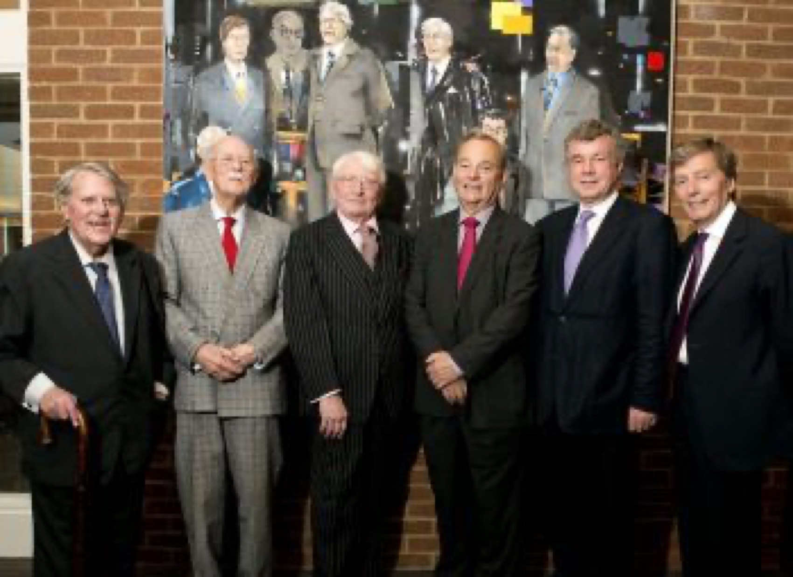
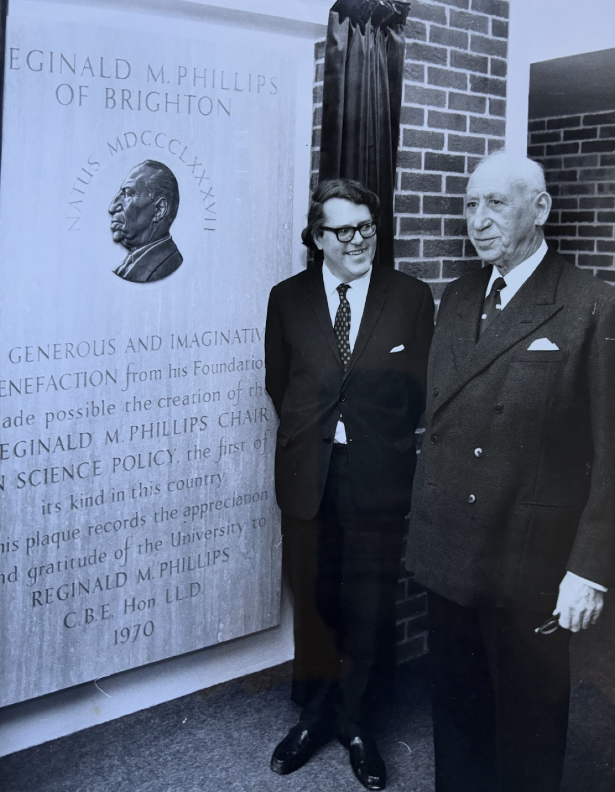
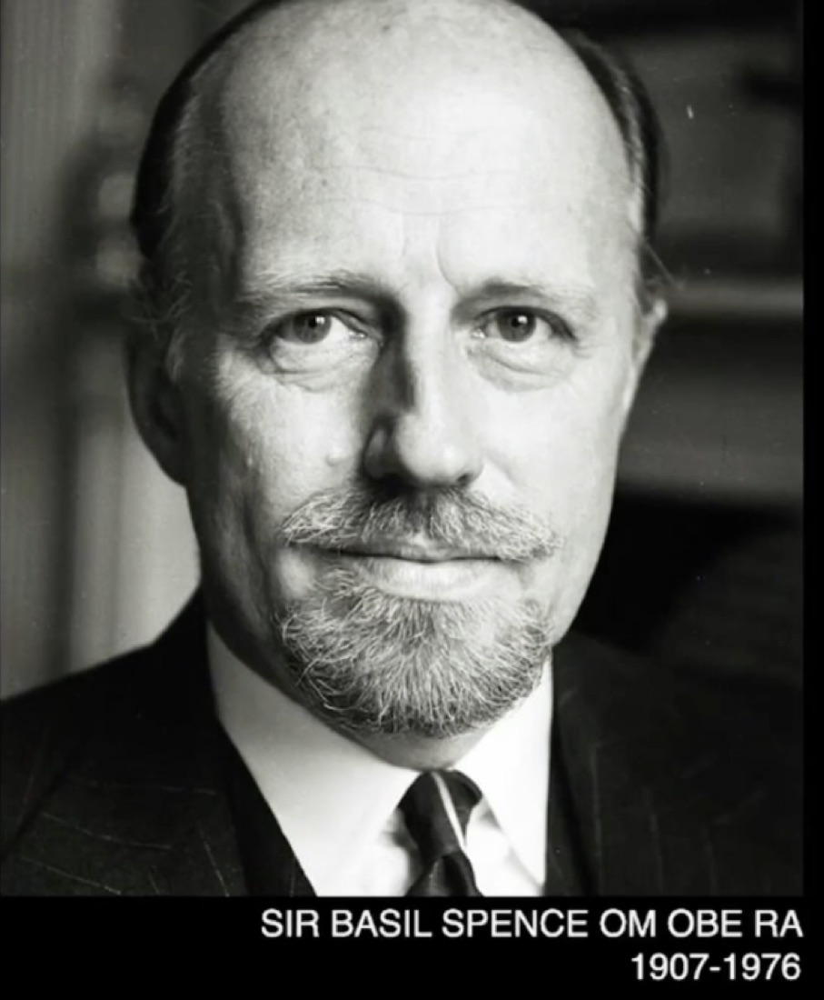

The founders and planners, the vice-chancellors, the scholars who built its reputation, and the students who passed through it. This section will gather their stories.
The founders
Two architects of the idea

Asa Briggs (with Susan Briggs and the university benefactor Reginald Phillips). Briggs gave the Sussex curriculum its ‘map of learning’.
First Vice-Chancellor
John Fulton (1902–1986)
Born in Dundee and educated at St Andrews and Balliol, Fulton came to Sussex from the principalship of University College, Swansea. He made the small-group tutorial the heart of Sussex teaching and gave the early university its ‘Balliol by the Sea’ character and its motto, Be still and know.
Second Vice-Chancellor
Asa Briggs (1921–2016)
Historian and Bletchley Park veteran, Briggs joined as Dean of Social Studies and Professor of History in 1960, became Pro-Vice-Chancellor for Planning, and succeeded Fulton as Vice-Chancellor in 1967. His call to redraw the ‘map of learning’ through schools rather than departments defined the Sussex curriculum.
The line of Vice-Chancellors
From Fulton to the present
Fulton and Briggs were the first of a line of vice-chancellors who steered the university through expansion, financial pressure, and reinvention. A portrait commissioned for the university brought several of them together with an image of the first seven.

Vice-Chancellors of Sussex. Left to right: Lord (Asa) Briggs, Sir Denys Wilkinson, Sir Leslie Fielding, Professor Gordon Conway, Professor Alasdair Smith and Professor Michael Farthing, with a portrait of the university’s first seven Vice-Chancellors.Benefactors
Reginald Phillips

Asa Briggs with Reginald M. Phillips, at the dedication of the Phillips benefaction, 1970.
The new university depended on benefactors as well as on its founders. Reginald M. Phillips of Brighton gave a generous and imaginative benefaction to the sciences at Sussex; his name is recorded on a dedication plaque unveiled in 1970, where he stands beside the then Vice-Chancellor, Asa Briggs.
The architect
Basil Spence

Sir Basil Spence OM OBE RA (1907–1976). Architect of the Falmer campus. See The Campus.
If Fulton and Briggs shaped the idea of the university, Sir Basil Spence gave it a body. Appointed to translate the founders’ ambition for an ‘education of taste’ into a university estate, Spence laid out the campus at Falmer in brick and concrete and designed Falmer House at its heart. His full work for Sussex is described on The Campus.
In preparation
Further profiles are being written, including W. G. Stone and the Brighton campaigners, the founding professors such as J. P. Corbett and Norman Mackenzie, and the scholars and students who shaped the university across its later decades.